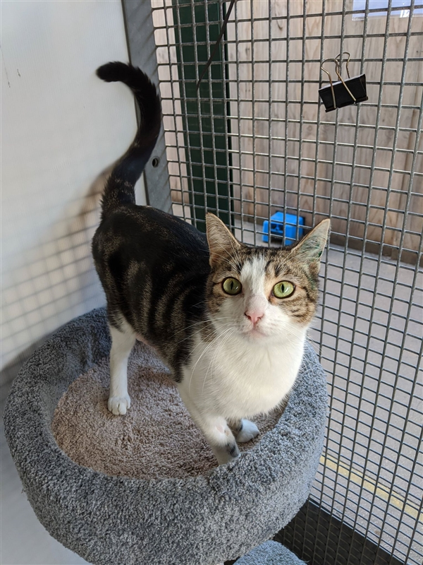
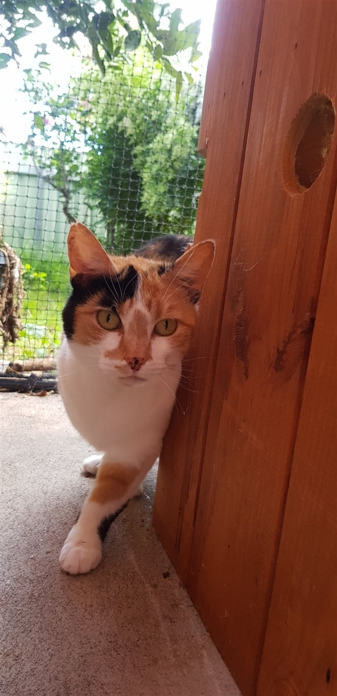
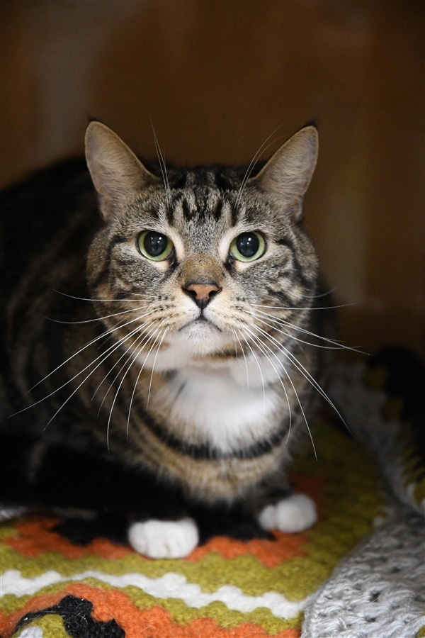

Name: Lily
Type: Cat
Breed: Domestic Short Hair
Sex: Female
Size: Medium
Colour: Tabby / White
Age: 2 years and 6 months
Hi there, my name is Lily.I came to the RSPCA as a stray, but after much hope from the RSPCA staff, sadly my old owners never came to reclaim me. Now I am looking for a new home to call my own.I am more of a independent lady who needs a quiet household to settle into. I can get spooked my loud noises so lots of hidey holes and a safe place for me to hide into would be great. This just makes sure I feel safe and secure in my new home. I am not a fan of other cats so I must be the only cat in the household. Can you blame me though? I just want to be the princess of the household and be treated like royalty. I would need to be an indoor only cat, so I can have all of the attention in my new home. I would like for my new home to have all of my favorite things, like soft blankets and nice tall cat trees and even better a radio for cat classical music! I may not be the cat who likes to be picked up but my personality will come out over time.

Name: Penny Hofstadter
Type: Cat
Breed: Domestic Short Hair
Sex: Female
Size: Medium
Colour: Tortoiseshell
Age: 2 years and 4 months
Special Adoption or Foster: *A very timid girl but has shown she can be affectionate side and enjoy attention. She is looking for someone with patience and understanding as she learns to trust you. Once she does, you too will see this more affection side come out. Best suited to a quiet adult home without dogs. *** Support will be provided. Please contact our Cat Surrender & Adoption Coordinator on 0403 950 222 or email microchipping.albury@gmail.com for more details and to express interest.

Name: Leo
Type: Cat
Breed: Domestic Short Hair
Sex: Male
Size: Medium
Colour: Tabby / White
Age: 8 years and 5 months
Hello we have been waiting to meet you, My name's Leo and this is my friend Lana! We are BFFs who cannot stand to be separated, so are looking for an owner who will take us both together. Lana is a lot more confident than me, I require a lot more time to warm up to people. We have been indoor only cats and have never been outside so we need a home that will continue to keep us as indoor only cats. Since we can be shy at first we need a very quiet home with no young children.